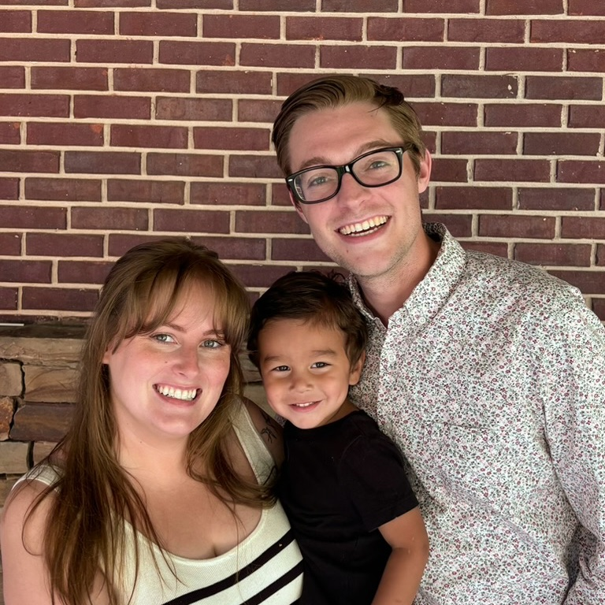
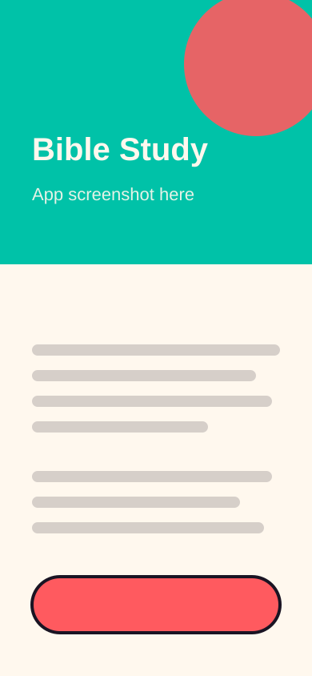

Students who love God and live on mission
Teaching students to love Jesus deeply and live it out in their schools, teams, and friend groups.
Resume & Portfolio
Student Pastor, Parent Equiper, & Alabama's One and Only Hockey Fan
Check out this curriculum I wrote
About me
I'm Seth! God called me into ministry in college, first behind the soundboard as a tech director, then on to seminary to pursue pastoring. Along the way, working jobs outside the church put me shoulder to shoulder with people from every walk of life and lit a fire in me to share the Gospel boldly and pour into the next generation.
My wife and I have been married eight years, and we're parents to a three-year-old son. I'm a Birmingham native, and we're finally putting down roots in my hometown, ready to serve a local church here for the long haul.
Teaching students to love Jesus deeply and live it out in their schools, teams, and friend groups.
Equipping moms and dads to lead discipleship at home. I'm here to back them up, not replace them.
Casting vision and handing leaders real ownership, so every student is known by a caring adult.
Prayer is the glue that holds the ministry together. It can't be any other way. And I am not just saying that. Everything, and I mean EVERYTHING, is meaningless if it's not saturated in prayer... Dare I say, even a super hip pixelated font and a cool website design are only as valuable as the time spent in prayer over those who will read it.
Ephesians 4:11-12 (ESV): And he gave the apostles, the prophets, the evangelists, the shepherds and teachers, to equip the saints for the work of ministry, for building up the body of Christ.
Experience
Feb 2024 – Aug 2025
Parkway Baptist Church · Augusta, GA
Aug 2023 – Feb 2024
Warren Baptist Church · Augusta, GA
Jan 2020 – May 2024
Southern Baptist Theological Seminary · Ninth and O Baptist Church, Louisville, KY
Jul 2017 – Oct 2019
Cottage Hill Baptist Church · Mobile, AL
Jobs outside the church (mostly from when I was in seminary) that put me alongside people from every walk of life, and helped me learn to share my faith out in the real world.
Account Manager
Peacock Insurance
Jan 2025 – Present
Assistant Operations Manager
All American Chimney Service · Louisville, KY
Jan 2022 – May 2023
Team Member
Chick-fil-A · Louisville, KY
May 2021 – Jan 2022
Supervisor
UPS · Louisville, KY
Oct 2019 – May 2021
M.A. Church Leadership
Southern Baptist Theological Seminary · May 2024
Rice-Judson Scholarship AwardB.S. Worship Leadership
University of Mobile · May 2017 · Emphasis in Worship Technology
Summa Cum LaudePortfolio

Featured project
This two week Bible study is a tool for a structured process of training up new Christians. I designed it specifically to be used as a concise, intentional pre-baptism discipleship process.
Swipe for more →
Contact
If your church is looking for a student pastor who loves Jesus, students, and families, I'd love to talk.
References available on request.